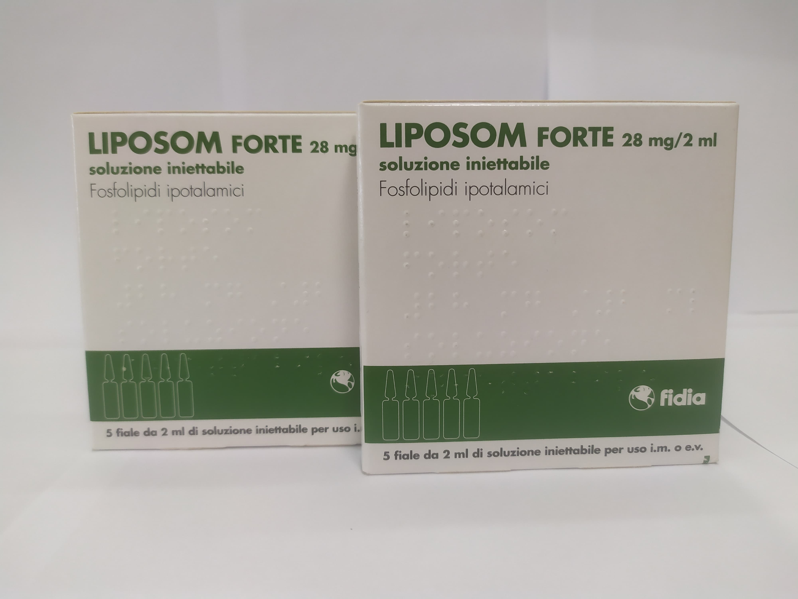

Контактная информация:
Цена: 750 грн/уп.
В наличии
Производитель: Италия
Цена: 750 грн/уп.
В наличии
Именно в FarmItal вы можете купить ампулы Liposom Forte,Липосом Форте в Украине, Гарантированно Качественный!
Доставка Liposom Forte осуществляется транспортными компаниями, сроки выполнения заказа оговариваются менеджером Фармитал. Вы можете заказать Липосом Форте в городах: Одесса, Херсон, Чернигов, Северодонецк, Бердянск, Бровары, Днепр, Винница, Киев, Славянск, Полтава, Краматорск, Белая Церковь, Каменское, Мариуполь, Черновцы, Александрия, Каменец -Подольский, Львов, Запорожье, Кропивницкий, Житомир, Ивано-Франковск, Сумы, Черкассы, Константиновка, Мелитополь, Кривой Рог, Ровно, Луцк, Никополь, Павлоград, Ужгород, Кременчуг, Лисичанск, Хмельницкий, Тернополь, Харьков, Николаев, а также в других населённых пунктах Украины.
Раствор для инъекций для внутримышечного или внутривенного применения.
По 2 мл в ампулах из оранжевого стекла
2 мл раствора Липосом Форте содержат активное вещество - фосфолипиды гипоталамуса 28 мг.
Вспомогательные вещества: маннитол, натрия гидрофосфата додекагидрат, дигидрат натрия дигидрофосфата, эфиры п-гидроксибензойной кислоты, вода для инъекций.
Парентеральное введение фосфолипидов гипоталамуса может активировать гипоталамический метаболизм путем увеличения оборота дофамина, гидроксилазы тирозина и аденилатциклазы с последующим накоплением циклического AMФ. Это фармакологическое действие отражается особенно на функции системы гипоталамус-гипофиз. Повлиявшие на физико-химические свойства мембран нейронов, гипоталамические фосфолипиды изменяют адаптацию рецепторов центральных нейронов к лечению.
Липосом Форте применяется в качестве вспомогательного средства при лечении метаболических церебральных нарушений вследствие нейроэндокринных расстройств.
Липосом Форте вводится по 2 мл внутримышечно или внутривенно 1 раз в день. Курс лечения определяется врачом индивидуально.
Противопоказаниями к применению Липосом Форте являются: установленная гиперчувствительность к компонентам препарата; наличие инфекции или повреждение кожного покрова области; инъекции.
Хранить в недоступном для детей месте.Хранить при температуре не выше 25 °C.